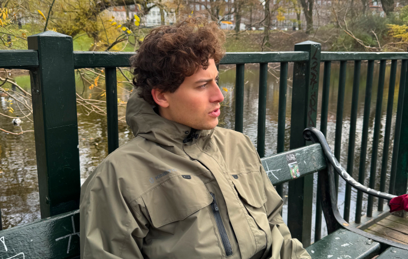
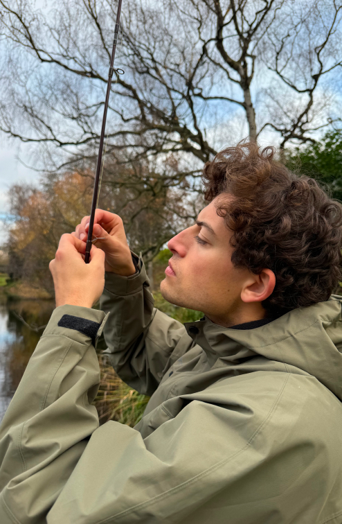
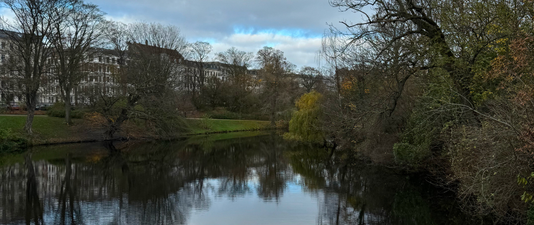
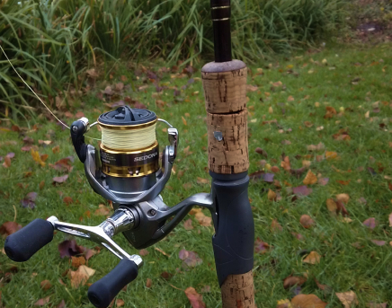
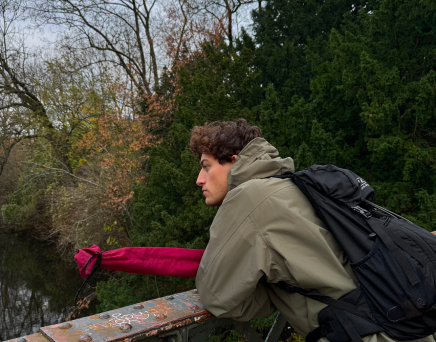

Passion Side
Historien bak:
Mannik Sandvad begynte å fiske med sin far når han kun var fire år gammel. På den første fisketuren hans dro de ned til en lokal sø og fanget en gigantisk Gjedde. Som voksen har han fortsatt med denne hobbyen og drar ofte ut på fisketur, både alene og med venner.
Noe av det han liker best med å fiske er at man får kommet seg unna den travle verdagen så man får satt alt stresset på avstand. Fisking bringer også med seg et sosialt felleskap og han forteller om hvordan han er med i Facebook gruppe der de deler erfaringer og opplevelser rundt fisking.

"Jeg elsker å fiske" - Mannik, 25 år
Galleri



